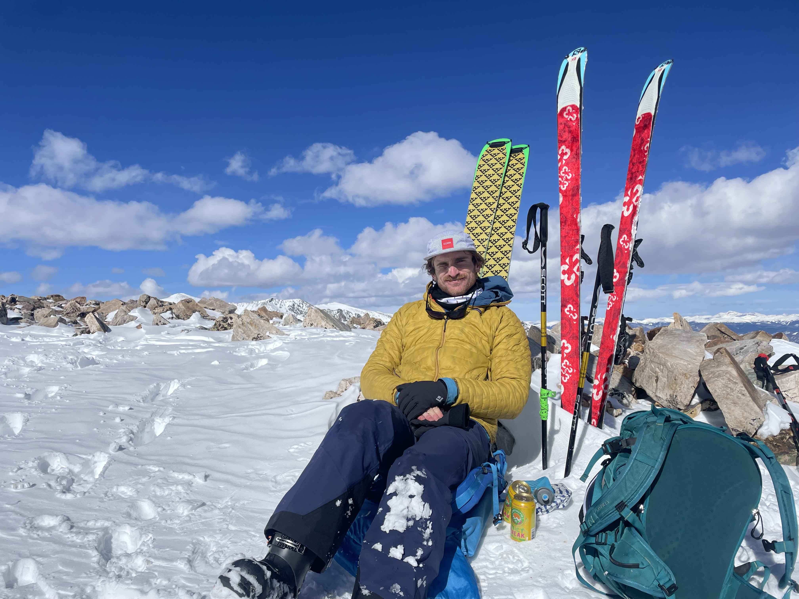
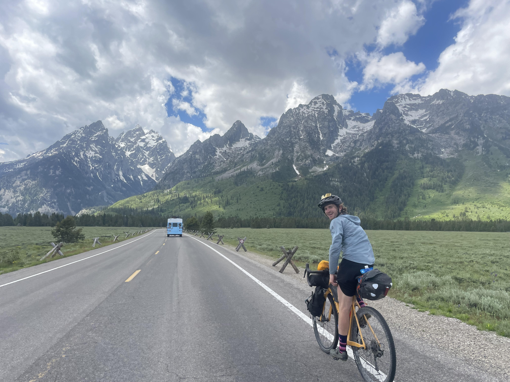
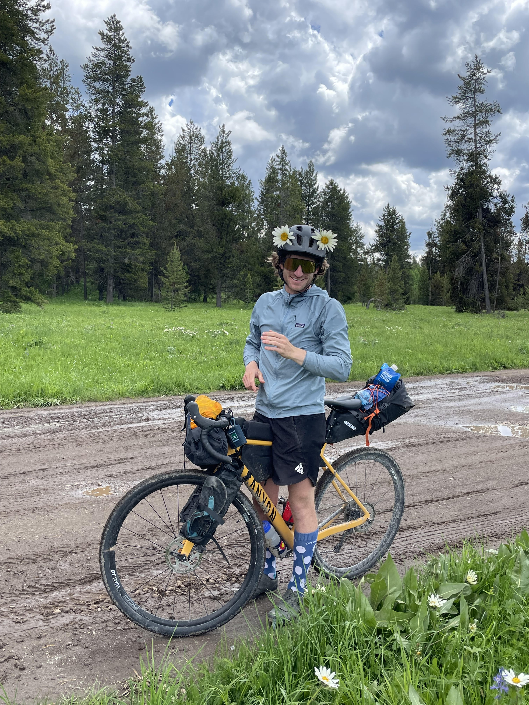

Liam Caulfield's Personal Bio
With a childhood fascination for nature and a Bachelor's degree in Geology, I developed a lifelong passion for environmental stewardship. My journey took me from exploring majestic national parks to pursuing a Master's in Information Management with a Data Science specialization, enabling me to apply data-driven insights to renewable energy projects. As a Park Ranger and Database Associate, I honed my skills in geospatial analysis and machine learning, contributing to sustainable practices and empowering data-informed decisions. Beyond my professional pursuits, I find joy in skiing, mountain biking, trail running, and the creative arts, embracing every moment with boundless enthusiasm.


